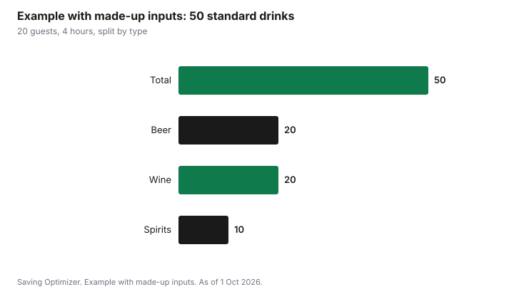

Events · Canada
How Much Alcohol to Buy for a Party in Canada (and What You Can Return)

To work out how much alcohol to buy for a party, plan in standard drinks: estimate how many guests will drink, how many hours the party lasts and how many drinks a typical guest has per hour, then split that total across beer, wine, spirits and non-alcoholic options. In Canada, a standard drink is 341 ml of 5% beer, 142 ml of 12% wine or 43 ml of 40% spirits, according to the Canadian Centre on Substance Use and Addiction. Buy a little less than your estimate and keep receipts, because some stores take back unopened products. The LCBO, for example, accepts unopened products in saleable condition with the original receipt within 30 days. Always plan rides home.
Key takeaways
- A standard drink in Canada: 341 ml of 5% beer, 142 ml of 12% wine, or 43 ml of 40% spirits (CCSA).
- Estimate: drinking guests × hours × drinks per guest per hour, using made-up rates you adjust for your crowd.
- Split the total across beer, wine, spirits and non-alcoholic drinks based on who is coming.
- LCBO: unopened, saleable products can be returned with the original receipt within 30 days; photo ID is required; delisted products are final sale.
- Buy plenty of non-alcoholic drinks, water and ice, and plan safe rides.
- Example with made-up inputs: 20 guests for 4 hours works out to about 50 standard drinks.
Quantity rules of thumb
There is no official formula for party quantities. The method below is a planning tool: you choose the rate based on your guests, and the arithmetic turns it into bottles and cans. Hosts often overbuy because they plan for every guest drinking steadily for the whole evening. In practice, some guests drink little or none, some arrive late, and drinking usually slows as the evening goes on.
| Step | What to enter | Your number |
|---|---|---|
| 1 | Guests who will drink alcohol | |
| 2 | Party length in hours | |
| 3 | Average standard drinks per drinking guest in the first hour (your estimate) | |
| 4 | Average per hour after that (your estimate, usually lower) | |
| 5 | Total standard drinks = guests × (first hour + later hours × hours after the first) | |
| 6 | Split by type: beer, wine, spirits |
Canada's Guidance on Alcohol and Health, published by the CCSA, links drinking more than two standard drinks on any one occasion with an increased risk of harms to yourself and others, including injuries and violence. A host does not control what guests drink, but planning quantities around a moderate pace and offering good alternatives supports guests who want to keep it light.
Beer, wine, spirits and non-alcoholic
Once you have a total in standard drinks, convert it to containers. The CCSA's standard drink sizes make the conversion straightforward for drinks at the usual strengths. Stronger beer, larger cans and stronger wines contain more than one standard drink each.
| Drink | One standard drink (CCSA) | Common container | Standard drinks per container (approx.) |
|---|---|---|---|
| Beer, 5% | 341 ml | 341 ml bottle or can | 1 |
| Beer, 5% | 341 ml | 473 ml tall can | 1.4 (CCSA poster) |
| Wine, 12% | 142 ml | 750 ml bottle | About 5 |
| Spirits, 40% | 43 ml | 750 ml bottle | About 17 |
| Cooler, cider or ready-to-drink, 5% | 341 ml | 341 ml can | 1 |
The CCSA's standard drink poster shows a 473 ml can of 5% beer as 1.4 standard drinks and a 568 ml pint of 5% beer as 1.7. It shows a 7% cider or ready-to-drink in a 341 ml can as 1.4 and a 9% one as 1.8. Read the label, since alcohol content varies. The wine and spirits counts are simple division: 750 ÷ 142 and 750 ÷ 43.
Non-alcoholic drinks
Plan non-alcoholic drinks for everyone, not only for guests who do not drink. Sparkling water, soft drinks, alcohol-free beer and wine, and a jug of water on every table help guests pace themselves. A non-alcoholic punch or mocktail is often as popular as the cocktail. Count drivers, pregnant guests, people who do not drink, and children if they will be there.
Provincial return policies
Whether you can return extra alcohol depends on where you bought it. Each province sets its own retail system, and private stores set their own policies, so ask before you buy and keep every receipt.
| Rule | LCBO |
|---|---|
| What can be returned | Products in saleable condition: unopened, label intact, in the original selling unit (for example, a full case) |
| Time limit | Within 30 days of purchase |
| Receipt | Original receipt required; no refunds without a receipt |
| Identification | Name, address, phone number, signature, and valid government-issued photo ID |
| Refund method | To the original tender (cash to cash, card to the same card, LCBO gift card to an LCBO gift card) |
| Gift receipts | Exchange for product of equal value only |
| Delisted products | Final sale unless defective |
| Limit | No limit on number or value, with the original receipt within 30 days |
In practice, this means a host in Ontario can buy a full case or an extra few bottles of wine for safety and return what was not opened, as long as the receipt and products are kept in good condition. Do not chill and wet the labels on bottles you might return, and do not break up a case you might return as a case. Outside Ontario, or at a private store, read that retailer's policy.
Mixers and ice
Mixers and ice are easy to forget and expensive to buy at a corner store halfway through the party. For each spirit you serve, plan the mixers that go with it, and buy more soda water than you think, since it doubles as a non-alcoholic drink. Ice is used for chilling bottles as well as for glasses; a cooler or a bathtub full of ice can replace fridge space. Garnishes such as lemons and limes are cheap but add up if you buy them out of season.
- Mixers: soda water, tonic, cola, ginger ale and juice to match your spirits.
- Ice for glasses plus extra for chilling.
- Garnishes: citrus, herbs.
- Cups or glasses: count more than guests, since people put drinks down and take new ones.
- Bottle opener, corkscrew and a bin for empties; check your province's deposit program for returnable containers.
Safe rides
A host's most important job with alcohol is making sure everyone gets home safely. Before the party, tell guests how they can get home: transit times, a ride-hail or taxi number, a designated driver, or a place to sleep. Stop serving alcohol well before the end, and put out food and coffee. If a guest has had too much to drink, do not let them drive.
Example with made-up inputs: 20 guests, 4 hours
These numbers are an example with made-up inputs. They are not a recommendation for how much anyone should drink. A host expects 20 drinking guests for 4 hours and assumes, for planning, an average of 1 standard drink per guest in the first hour and 0.5 per hour after that. That gives 20 × (1 + 0.5 × 3) = 50 standard drinks. Based on the guest list, the host splits them about 40% beer, 40% wine and 20% spirits.
| Type | Standard drinks | Containers |
|---|---|---|
| Beer, 5%, 341 ml | 20 | 20 bottles or cans (a 24-pack covers it) |
| Wine, 12%, 750 ml | 20 | 4 bottles |
| Spirits, 40%, 750 ml | 10 | 1 bottle |
| Non-alcoholic | — | Sparkling water, soft drinks, alcohol-free beer, water |
| Total alcohol | 50 | 24-pack, 4 bottles of wine, 1 bottle of spirits |
The host adds two extra bottles of wine kept unopened with the receipt, to return if they are not needed.

Planner
- Count drinking and non-drinking guests and the party length.
- Estimate standard drinks with the worksheet and split by type.
- Convert to containers, rounding down slightly.
- Check the store's return policy and keep receipts and unopened products in good condition.
- Buy non-alcoholic drinks, mixers, ice and cups.
- Plan rides home and stop serving well before the end.
Drinks are one line in a party budget. The holiday party hosting budget puts them beside food and supplies, and a holiday open house or brunch usually needs fewer drinks than an evening party.
Sources
- Canadian Centre on Substance Use and Addiction, Know Your Standard Drink poster (2025) and Canada's Guidance on Alcohol and Health, ccsa.ca, as of 1 Oct 2026. Standard drink sizes; 473 ml can figures; more than 2 standard drinks per occasion associated with increased risk of harms.
- LCBO, Returning Products, lcbo.com, as of 1 Oct 2026. 30-day returns of unopened, saleable products with original receipt; ID and personal information; refund to original tender; gift receipts; delisted products final sale; policy updated September 2024.
- Container conversions are simple division of the container volume by the CCSA standard drink size.
- The guest count, drink rates, totals, table and chart in the example are an example with made-up inputs.
Frequently asked questions
How much alcohol do I need for a party of 20?
It depends on your guests and the length of the party. Multiply drinking guests by hours and an estimated drinks-per-hour rate, then convert to containers. In a made-up example, 20 guests for 4 hours at 1 drink in the first hour and 0.5 after works out to 50 standard drinks.
What is a standard drink in Canada?
The Canadian Centre on Substance Use and Addiction defines a standard drink as 341 ml of 5% beer, cider or cooler, 142 ml of 12% wine, or 43 ml of 40% spirits.
Can I return unopened alcohol to the LCBO?
Yes. The LCBO accepts products in saleable condition, unopened with the label intact and in the original selling unit, with the original receipt within 30 days. You must give your name, address, phone number and signature and show government-issued photo ID. Delisted products are final sale unless defective.
How many glasses of wine are in a bottle?
A 750 ml bottle of 12% wine holds about five standard drinks of 142 ml, using the CCSA standard drink.
How do I keep guests safe when serving alcohol?
Offer plenty of non-alcoholic drinks and food, stop serving well before the end, plan rides home in advance, and never let a guest who has been drinking drive.
Researched and drafted with AI assistance and fact-checked against official Canadian sources. How we create content.
Note: Education only. Please drink responsibly and never drive after drinking.